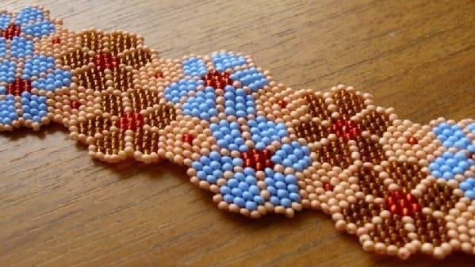
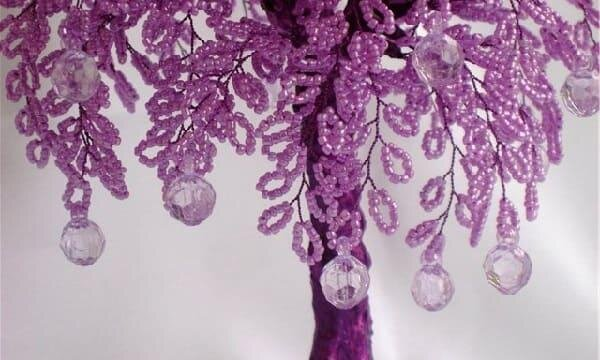
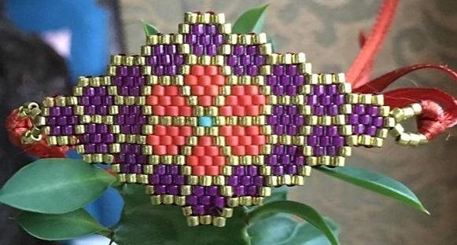
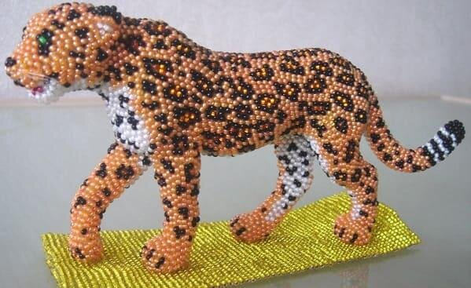
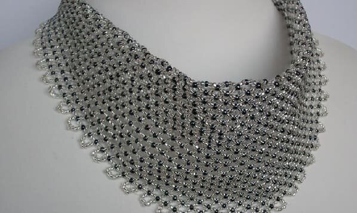

Техники бисероплетения
Мозаичная
Так называют самый плотный метод плетения. Бисеринки в нем напоминают кирпичную кладку. Делать такое плетение можно и с одной иголкой, и с двумя. Мозаичное плетение отлично выполняется на круглом бисере, рубке и граненом бисере. Браслеты, колье, пояса, броши получаются идеальными в этой технике.
Мозаичная техника, в свою очередь, подразделяется на плетение полотном, косое плетение и плетение по кругу. Изделия, полученные с помощью этой техники, считаются высокопрочными и среднегибкими.
Петельная
Петельная техника – это ряд последовательных петелек из самого бисера. Листочки, тычинки и лепестки обычно плетут именно этим способом. Обычно мастера делают петельки одного размера, которые располагают в шахматном порядке. На одной веточке можно сделать красивые разветвления. Очевидно, что это популярнейший способ создания ажурных деревьев из бисера.
Кирпичная
Очень похожа с мозаичной техникой, но кирпичный стежок предполагает расположение бисеринок горизонтальными рядами. Мозаичная же техника – это вертикальные ряды. Такие изделия более гибки, потому кирпичную технику используют и для самостоятельного плетения, в комбинации с той же мозаикой.
Объемная
Напоминает данный способ плоское параллельное плетение, только бисерные ряды располагаются друг над другом, а не на одной плоскости. Для основы годится и проволока, и леска. У этой техники очень широка сфера применения, но чаще используют ее возможности рукодельницы, плетущие объемных животных (для брошей, например).
Сетчатая
Это то же самое, что монастырская техника (или плетение «в крестик»). Базовым элементом данного вида является крестик из четырех бусинок. И в готовом изделии, выполненном в этом технике, можно разглядеть постоянно повторяющиеся крестики. Сетчатым способом очень красиво оплетают сосуды, выполняют декор пасхальных яиц, делают шикарные бисерные воротнички. Плетение предполагает использование одной, главной нити.